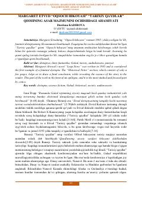

MEMargaret Etvudning “Oqsoch hikoyasi” romanidagi “Tarixiy qaydlar” qismining ilmiy tahlili.
Ushbu ilmiy maqola Margaret Etvudning mashhur feminist distopiyasi bo'lgan “Oqsoch hikoyasi” romanidagi “Tarixiy qaydlar” qismining asar mazmunini ochib berishdagi o'rni va ahamiyatini tahlil qiladi. Maqolada asarning epilog qismi, tanqidchilarning fikrlari hamda Galad rejimi va tarixiy reallik o'rtasidagi bog'liqliklar yoritilgan.